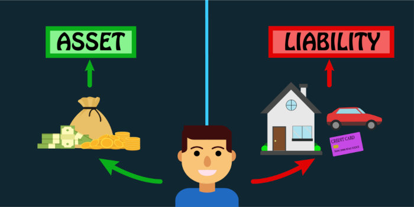

1. Learn investing and taking risks
Learn about stock markets , trading , cryptocurrency , the things that these things are dependent on , how does the price of a stock increase , and a whole lot of other things rather than blindly following you friend's advice . Invest a little part of
your income first in the learning stage , and you will automatically start getting better with experience and learning .But yes , for this , you need to have patience and money saving skills . You can also look up at other things like
investing in gold or mutual funds if you prefer long term returns . Who knows you may start investing in real estate after a few years !!

2. Focus on increasing assets rather than liabilities
Focus on things that increase your source of income rather than ones which will require maintenance . For example , what is the logic of buying a new car in first few years of employement ? If you need a vehicle for transportation , just purchase a second
hand motorbike , or a cheap one motorbike with greater mileage rather than fancy motorbike with less mileage and more maintenance .Same can be done with cars too . Instead of buying cars , take one for lease during your first years or
else just take a second hand one . A lot of money can be save by doing these things , which can even be further increased by buying more assets like stocks , plots etc.

3. Do your current job well
We don't need to quit our job and just start trading or statrtups without any former experience or knowledge . We can also be focused on our job and work on getting promotions and increments instead of just hating it and being like a crybaby . Work extra
time occasionaly or whenever possible , keep good relations with your coworkers and boss and just be consisent at it to get a raise .
4. Rent out your things
Don't be too much attached to your belongings .If you have a home with some extra room , you can rent it out to earn a good passive income . Instead of keeping a car , you can rent one to cab companies . Building these types of assets may
take a heavy investment , but there are much better returns over a long period of time . You may start with one room and then get them up to two , three and so on .
5. Make a course on Udemy
If you are extraordinary at some skill , then you can partime coach about it or make a course about it in udemy . While , you can also try freelancing to earn some extra money . But yes ,don't forget the most important step , which is to be
financially literate .